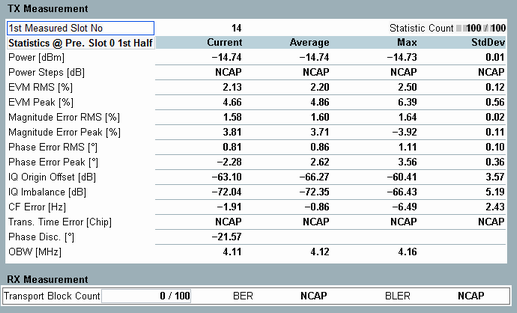

TX Measurement and RX Measurement
This view contains tables of statistical results for the TX and RX measurements.

WCDMA multi-evaluation: overview of statistical results
The table provides an overview of statistical values measured in the preselected slot. In a dual uplink carrier operation, the results are displayed per carrier. Other detailed views provide a subset of these values:
- Power: Transmitter output power of the UE, see also "Detailed Views: UE Power and Power Steps".
- Power steps: Difference between the UE power of the preselected (half-) slot and the previous (half-) slot, see also "Detailed Views: UE Power and Power Steps".
- EVM, magnitude error, phase error, I/Q origin offset, I/Q imbalance and carrier frequency error.
- Transmit time error: Difference between the actual timing and the expected timing. The timing error measurement requires an external trigger signal to derive the expected timing. Suitable trigger signals are, for example, the frame trigger signal provided by the signaling application or an external trigger fed via the rear panel. Availability depends on instrument model.
Please check the data sheet to verify whether the timing error measurement has already been officially released and provides sufficient accuracy. - Phase discontinuity: change in phase between two adjacent timeslots, see also "Additional information: Phase discontinuity".
- Occupied bandwidth (OBW): width of a frequency range around the assigned channel frequency containing 99% of the total integrated power of the transmitted spectrum.
See also: "TX Measurements"
For information about this measurement, refer to "WCDMA RX Tests".
The table provides the following results:
- Transport block count: Number of transport data blocks received since the start of the measurement
- Bit error rate (BER): Percentage of received data bits that were erroneous
- Block error ratio (BLER): Percentage of received transport data blocks containing at least one erroneous bit. One data block contains 244 bits.
For additional information, refer to "Common View Elements".
For query of the results via remote control, see "Measurement Results".